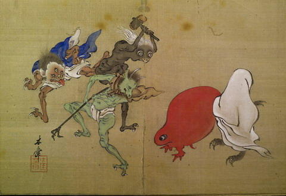

5体の化物を描いている。向かって左側の3体は、右側から2番目の赤い化物に目を向けている。
著作者：木舜／出典：親書誌：U426_nichibunken_0155：東都画家妖怪画帖；トウトガカヨウカイガチョウ／日付：2010／資源識別子：U426_nichibunken_0155_0001_0000
Copyright (c)2010- International Research Center for Japanese Studies, Kyoto, Japan. All rights reserved.